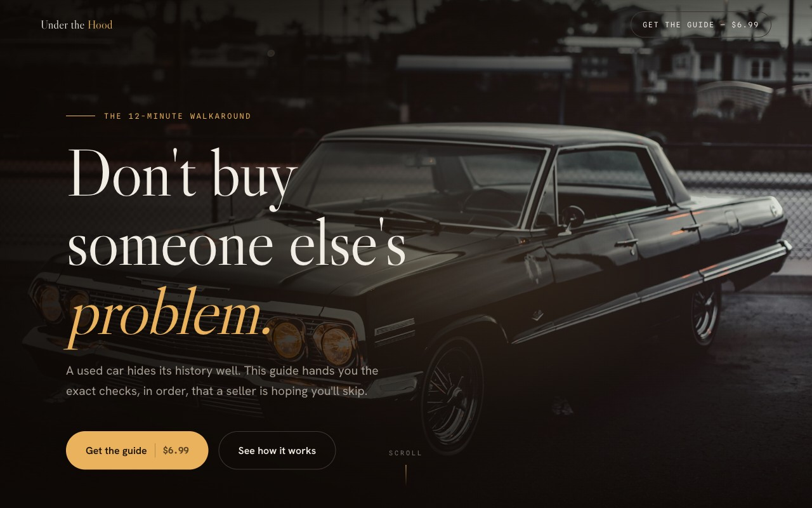

Cinematic Showroom
Premium · dramatic · weighty
A luxury car launch. High-contrast serif display over real photography, a pinned walkaround that cross-fades through the inspection.
- Libre Caslon Display · photo walkaround
- Deep charcoal & headlight gold
- Best showcase for the storytelling